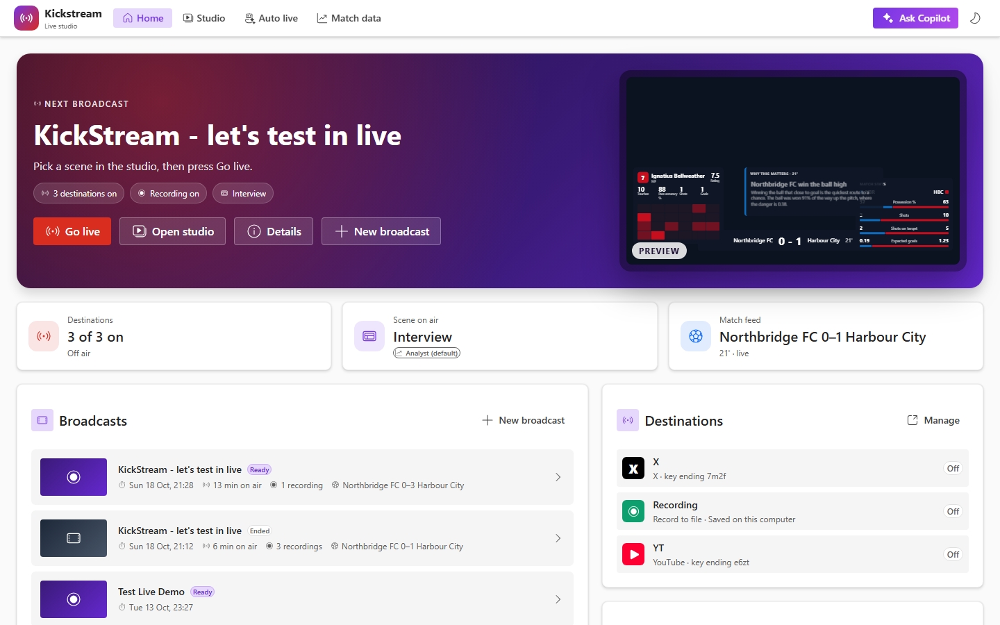
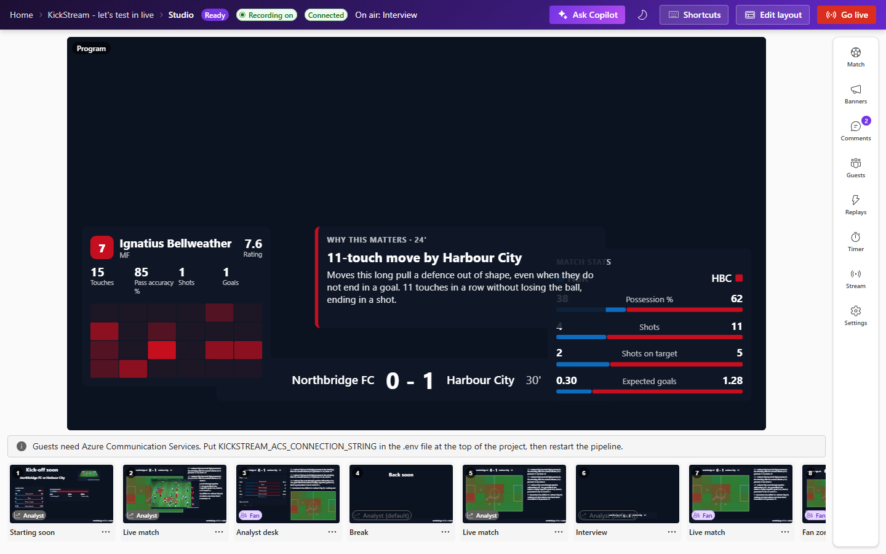
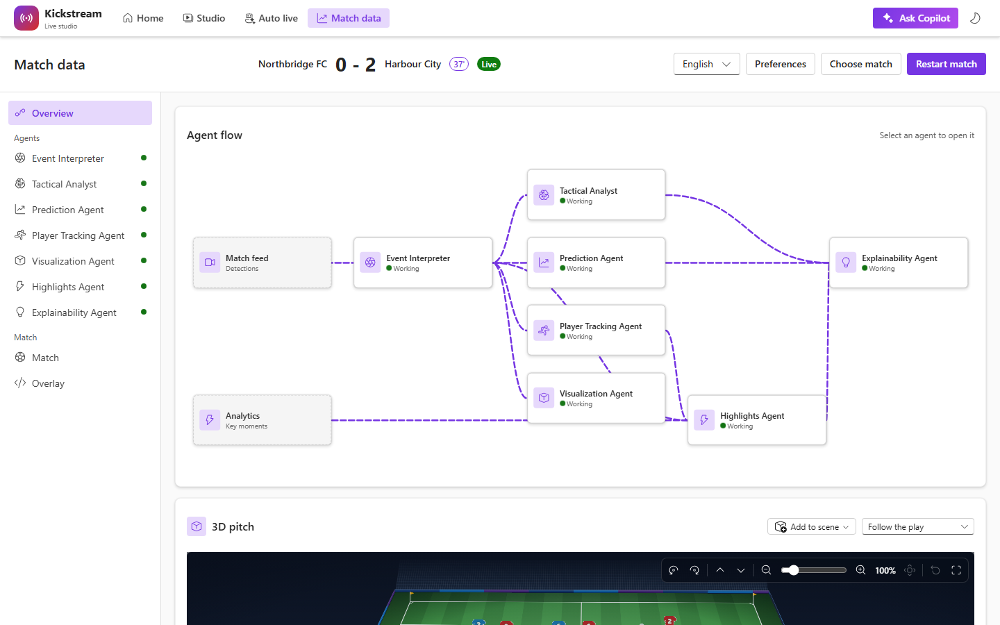

Solution overview and scope
Kickstream solution overview and scope
Kickstream is live-streaming software for football. A host creates a broadcast, composes scenes in the studio, and goes live to YouTube, X, Facebook and Twitch at once. What the program shows comes from a match event stream turned into live intelligence, AI narratives and recaps. Agents then cut the recording’s best moments into vertical reels.



This set describes the software in this repository: the web studio, the Python pipeline, and the Azure resources deploy/terraform actually creates. It is the solution description an architect or operator can build from. It is not a store listing.
Kickstream does not implement Microsoft Marketplace SaaS fulfillment, an Entra purchase landing page, or a live Partner Center offer. The Entra application in deploy/terraform/auth.tf is a single-tenant studio gate for the deployer, not a buyer sign-in.
Studio
Home, broadcast, and studio. Scenes, banners, guests, and one Go live control.
Match pipeline
Ingest, interpret, explain, render, and personalize, plus seven match agents.
Azure deploy
One Container App, Cosmos match log, Communication Services, Speech, Files, Registry.
Local run
Python 3.13 and Node 24. A seeded 90-minute match plays in about three minutes.
What is in scope
- The web app in
apps/web: home (/), a broadcast (/broadcasts/{id}), that broadcast’s studio,/studio, match data (/match), a guest page (/guest/{secret}), and auto live (/live). - The pipeline in
services/pipeline: FastAPI on port 8000, match simulation or a chosen source, analytics, narration, overlay, gateway (Server-Sent Events and WebSockets), output to platforms, fans, broadcasts, reels, and Ask Copilot. - The deployment in
deploy/: Terraform for the resource group, anddeploy.ps1/deploy.shto build the image and apply it. - Languages on the match surface: English, Spanish, and Hindi. Commentary modes: Fan and Analyst.
What is out of scope
- A transactable Marketplace offer, fulfillment webhooks, metering, or a purchase landing page that resolves a Marketplace token.
- StatsBomb Open Data inside a paid offer. That source is non-commercial and is off unless
real_sourcesis set. See Integrations. - A video detector. The synthetic match, or a JSON Lines file named by
KICKSTREAM_DETECTOR_FILE, stands in for detections. There is no video understanding in the pipeline. - Taking money from fans. Superchats are displayed. Payment stays on the platform the fan already used.
How to read the set
| Document | What it settles |
|---|---|
| Architecture and data flow | The one process, the pipeline stages, and where state lives. |
| Functional capabilities | Studio, agents, Copilot, fan zone, auto live, broadcasts, and reels. |
| Security, privacy, and identity | Local exposure, the Entra studio gate, secrets, and the match log. |
| Deployment and operations | Terraform resources, probes, scale, and the deploy scripts. |
| Integrations and data sources | Platforms, match feeds, speech, models, and licences. |
| Assumptions, constraints, and risks | Single replica, data licences, and what is not built. |
The same text is typeset as kickstream-solution.pdf. The briefing deck is kickstream-briefing.pdf.